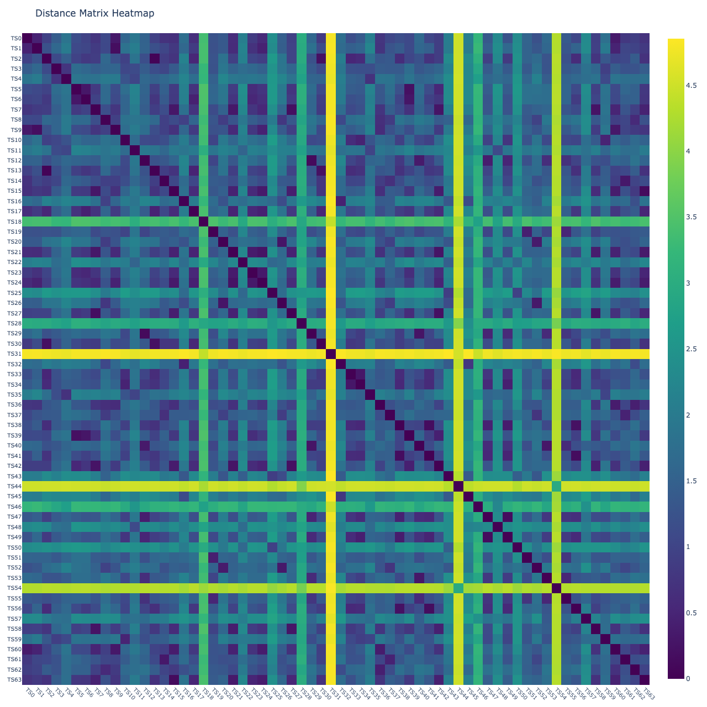
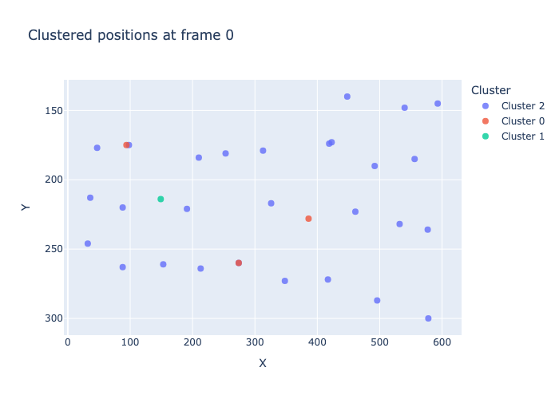
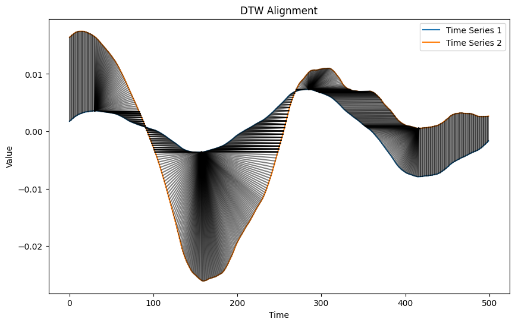

setup_logging(
force=True,
module_levels={
"mixins": "WARNING",
"piece": "INFO",
"dbms": "INFO",
"embedding": "INFO",
"tutils": "INFO",
"cutils": "INFO",
"wdecomposition": "INFO",
"wrepresentation": "INFO",
},
)Classify
fftrio_segment00 = (14200, 14700)
fftrio_segment11 = (14950, 15450)fftrio00 = Piece(
time_interval=fftrio_segment00,
title="Don Giovanni", subjs=(40,76))fftrio11 = Piece(
time_interval=fftrio_segment11,
title="Don Giovanni", subjs=(40,76))Heatmap depicts DWT pairwise distances
Xopera0 = np.stack([
fftrio00.percentiles_face(
fbands=[1],
features=['p85'],
factory=wfactory('db4', level=8)
).features_tint[subj] for subj in fftrio00.percentiles_face(factory=wfactory('db4', level=8)).subjects
])
Xopera1 = np.stack([
fftrio11.percentiles_face(
fbands=[1],
features=['p85'],
factory=wfactory('db4', level=8)
).features_tint[subj] for subj in fftrio11.percentiles_face(factory=wfactory('db4', level=8)).subjects
])
Xopera = np.concatenate([Xopera0, Xopera1])plot_dm_heatmap(Xopera, alignment_type='fastdtw', gamma=1, normalize='log', n_jobs=8) # 'dcor', 'fastdtw'(euclidean), 'tslearn_dtw'(euclidean), 'soft_dtw'(sqeuclidean), 'soft_dtw_div'
features=['p90']
clusters_subj_fftrio00, subj_clusters_fftrio00, labels_fftrio00, silhouette_fftrio00, centroids_fftrio00 = dtw_clustering(
fftrio00.percentiles_face(fbands=[1,2], features=features, factory=wfactory('db4', level=8)),
normalize=False, #'minmax',
metric = "dtw",
n_clusters=3,
max_iter=10,
random_state=0
)depict_clusters(clusters_subj_fftrio00, fftrio00.roi_t.position.features_tint)
depict_DTW(Xopera0[11].T, Xopera1[30].T, dist=euclidean, radius=10)